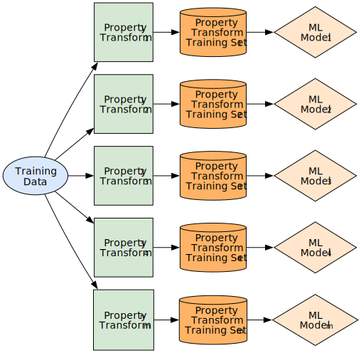
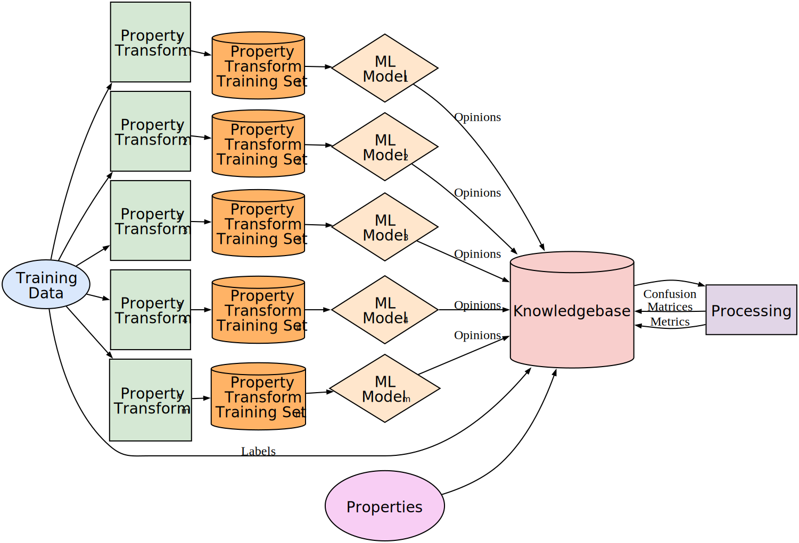

Explainable AI Architectures:
Methods, Applications, Examples, and Results
Case Western Reserve University
Electrical, Computer, and Systems Engineering
Outline
- Introduction
- Problem
- Contributions
- Background
- Property-Based Explainable Method
- Case-Based Explainable Method
- Handwritten Character Results
- Hardware Trojan Results
- Conclusion
Introduction
- Artificial Intelligence (AI) and Machine Learning (ML) used widely
Applications: Business, Medicine, Transportation - Lack of trust in AI - ML is an opaque box
- ML cannot effectively explain or justify decisions
- Explainable AI (XAI) popularity
Problem
- Neural Networks cannot explain their inferences
- Therefore, there is a lack of trust in these systems
- XAI systems are an attempt to explain the inference by a trained NN and increase trust in ML systems
Comparison

Contributions
- Property-Based Explainable (PBE) Method and Architecture
- Case-Based Explainable (CBE) Method and Architecture
- Explainability metric - Exc
- Combining explainable and unexplainable components
- Metric for Effectiveness of a model - E(j, c)
- A new metric for model performance - EPARS
- Communicating when a model can fail - FDR
- Correspondence metric - Corr

Publications
- Four IEEE Conference papers and presentations
- 2021, Explainable Artificial Intelligence Methodology for Handwritten Applications
- 2023, Explainable Neural Network Recognition of Handwritten Characters
- 2024, An AI Architecture with the Capability to Explain Recognition Results
- 2024, An AI Architecture with the Capability to Classify and Explain Hardware Trojans
- Working papers for journal submission
Background and Related Work
Artificial Neuron Model
Activation Functions
Sigmoid

Hyperbolic Tangent
Rectified Linear Unit
Multi-layer Feed Forward Neural Network

LeNet-5 CNN Neural Network

ResNet

Support Vector Machines
TODOExponential Growth of XAI
XAI Research
- 1999 - Case-Based Explanation of Non-Case-Based Learning Methods - Caruana et al.
- 2018 - Explainable neural networks based on additive index models - Vaughan et al.
- 2016 - Why should I Trust you - LIME - Marco Tulio Ribeiro et al.
LIME superpixel mask for classification as a Bernese mountain dog
XAI Research - Continued
- 2017 - A Unified Approach to Interpreting Model Predictions Lundberg et al. - SHAP
Confusion Matrix
| Occupation of Father |
|||||
|---|---|---|---|---|---|
| Army | Art | Law | Medicine | ||
| Occupation of Son |
Army | 26 | 2 | 3 | 0 |
| Art | 0 | 51 | 5 | 4 | |
| Law | 3 | 1 | 18 | 0 | |
| Medicine | 0 | 0 | 1 | 20 | |
Performance Metrics - Confusion Matrix - One Versus Others
| Predicted Classes |
|||||
|---|---|---|---|---|---|
| a | b | c | d | ||
| Actual Classes |
a | TN | FP | TN | TN |
| b | FN | TP | FN | FN | |
| c | TN | FP | TN | TN | |
| d | TN | FP | TN | TN | |
| Legend |
|---|
| True Positives (TP) |
| True Negatives (TN) |
| False Positives (FP) |
| False Negatives (FN) |
Performance Metrics - Continued
- Accuracy = $\frac{TP+TN}{TP+TN+FP+FN}$
- Precision = $\frac{TP}{TP+FP}$
- Recall = $\frac{TP}{TP+FN}$
- Specificity = $\frac{TN}{TN+FP}$
- FDR = $\frac{FP}{FP+TP}$
Imbalance Ratio (IR)
If IR > 1 the data set is imbalanced
- AUC
- F1-Score
- Cohen's Kappa
- Matthew's Correlation Coefficient
Handwritten Character Datasets
Widely used for BENCHMARKING ML architectures
-
MNIST - 70,000 decimal digits contributed by students and census bureau workers


-
EMNIST - Over 800,000 handwritten characters digits, uppercase characters, lowercase characters


Background Hardware Trojans
CIA Impact Model
- Hardware Trojan compromises:
- Confidentiality
- Integrity
- Availability

Rare Event Hardware Trojan

Problem
- Static trojan detection using netlist features
- LGFi - Logic gate fanin
- FFi - Flip-flop input
- FFo - Flip-flop output
- PI - Primary input
- PO - Primary output
- Highly imbalanced dataset
- ML trained to make decisions
- Trust in the decisions is lacking - Need Explanations
Property-Based Explainable Method
Property-Based Explainable Method
Intent: Produce a system that can explain decisions to a user in plain terms by reasoning about the system's decisions in relation to explainable properties.
Explainable Property: An attribute of an input sample that may differentiate between classes and provide rationale for a classification decision to a user.
Property Transform: a property transformation is a function to modify an input sample to bring out an explainable property in the resulting output. A property transformation aims to highlight or exemplify explainable properties in the input.

Property-Based Explainability MNIST
| Property | Transform | Image | Trans. |
|---|---|---|---|
| Stroke | Skeleton | ||
| Circle | Hough Circle | ||
| Circle | Hough Ellipse | ||
| Circle | Multiple Circle and Ellipse | ||
| Crossings | Intersection |
| Property | Transform | Image | Trans. |
|---|---|---|---|
| Endpoints | Endpoints | ||
| Enclosed Region | Flood Fill | ||
| Enclosed Region | Convex Hull | ||
| Line | Hough Line | ||
| Corner | Harris Corner |


Voting Scheme
- Effectiveness: Characterizes how well an inference engine performs. The effectiveness of an inference engine, $j$, to correctly recognize an item of class $c$ is expressed as $E(j,c)$.
- Voting: Selecting among potentially conflicting opinions from inference engines.
Voting Scheme - Continued
Explainability
- Some properties and transforms have lacking performance
- Addition of unexplainable inference to improve performance
- Need a means of quantifying explainability, $Ex(c)$, for a class $c$
- Each property transform, $j$, has a an explainbility metric $0 \le X_j \le 1$
Explanation Routine - XAI Block
- Assemble the textual rationale composed of
- The winning vote with confidence and explainability
- Present alternatives voted for with confidence and axplainability
- Common failures based on historical FDR

Case-Based Explainable Method
Case-Based Explainable Method
Intent: Produce a system that can explain decisions to a user by providing evidence about like training cases.
Inspiration: Work by Caruana et al. Case-based explanation of non-case-based learning methods. In providing an answer
Consider training samples as cases. Similar cases that the model was trained on should support a decision.
Not explaining the model behavior but what was used to train the model that is like an input.


$WN(c) = \sum_{i=1}^{c_i \in k} \frac{bf(c)}{(d_i+1.0)^2}$
$Corr(c) = \frac{WN(c)}{\sum_{j=1}^{c_j \in k}{WN(c_j)}}$

Handwritten Character Results
Property Based Architecture
MNIST Aggregate Results
| Architecture | |||
|---|---|---|---|
| ML Model Type | 1 Unexpl. | 10 Expl. | 10 Expl. 1 Unexpl. |
| MLP | 98.3 | 96.2 | 97.9 |
| SVM | 97.9 | 95.4 | 97.3 |
| CNN | 99.4 | 97.3 | 98.7 |
| Resnet50 | 98.9 | 97.6 | 98.8 |
| Architecture | |||
|---|---|---|---|
| ML Model Type | 1 Unexpl. | 10 Expl. | 10 Expl. 1 Unexpl. |
| MLP | 98.3 | 96.2 | 97.9 |
| SVM | 97.9 | 95.4 | 97.3 |
| CNN | 99.4 | 97.3 | 98.7 |
| Resnet50 | 98.9 | 97.6 | 98.8 |
Unexplainable (Unexp.)

Explainable (Expl.)

Explainable + Unexplainable

MNIST Explainable Results: Digit 
| Effectiveness | Explainability | |||||||
|---|---|---|---|---|---|---|---|---|
| Fj | Property | Vote | E(j,0) | E(j,4) | E(j,9) | $Ex(0)$ | $Ex(4)$ | $Ex(9)$ |
| F1 | Stroke | 4 | 1.0 | 1.0 | ||||
| F2 | Circle | 0 | 0.039 | 1.0 | ||||
| F3 | Crossing | 0 | 0.018 | 1.0 | ||||
| F4 | Ellipse | 0 | 0.004 | 1.0 | ||||
| F5 | Ell-Cir | 0 | 0.069 | 1.0 | ||||
| F6 | Endpoint | 4 | 0.974 | 1.0 | ||||
| F7 | Enc. Reg. | 0 | 0.021 | 1.0 | ||||
| F8 | Line | 9 | 0.496 | 1.0 | ||||
| F9 | Con. Hull | 4 | 0.826 | 1.0 | ||||
| F10 | Corner | 4 | 0.538 | 1.0 | ||||
| F11 | Unexp. | 4 | 1.0 | 0.0 | ||||
| Weight / $\sum{E(j,c)X_j}$ | 0.151 | 4.337 | 0.496 | 0.151 | 3.337 | 0.496 | ||
| Confidence/Expl | 3.03% | 87.0% | 9.96% | 100.0% | 76.9% | 100% | ||
- Confidence is high, 87%, for interpreting this character as a four due to the stroke, endpoint, convex hull, and corner properties. Explainability was 76.9%. The FDR shows when selecting a four, 1.9% of the time we are incorrect. The most frequent mistakes are that the digit is a nine 0.9% and a seven 0.3% of the cases.
- Confidence is low, 9.96%, for interpreting this character as a nine due to the line property. Explainability was 100%. The FDR shows when selecting a nine, 2.6% of the time we are incorrect. The most frequent mistakes are that the digit is a four 1.4% of the time and an eight 0.5% of the cases.
- Confidence is low, 3.03% for interpreting this character as a zero due to the ellipse-circle, circle, fill, crossing, and ellipse properties. Explainability was 100%. he FDR shows when selecting a zero, 1.4% of the time we are incorrect. The most frequent mistake is that the digit is an eight 0.6% of the time.
Explainable

| Effectiveness | Explainability | |||||||||
|---|---|---|---|---|---|---|---|---|---|---|
| Fj | Property | Vote | E(j,C) | E(j,T) | E(j,U) | E(j,X) | $Ex(C)$ | $Ex(T)$ | $Ex(U)$ | $Ex(X)$ |
| F1 | Stroke | C | 0.964 | 1.0 | ||||||
| F2 | Circle | C | 0.114 | 1.0 | ||||||
| F3 | Crossing | C | 0.056 | 1.0 | ||||||
| F4 | Ellipse | T | 0.009 | 1.0 | ||||||
| F5 | Ell-Cir | C | 0.131 | 1.0 | ||||||
| F6 | Endpoint | C | 0.574 | 1.0 | ||||||
| F7 | Enc. Reg. | X | 0.005 | 1.0 | ||||||
| F8 | Line | U | 0.244 | 1.0 | ||||||
| F9 | Con. Hull | C | 0.603 | 1.0 | ||||||
| F10 | Corner | C | 0.369 | 1.0 | ||||||
| F11 | Unexp. | C | 0.989 | 0.0 | ||||||
| Weight / $\sum{E(j,c)X_j}$ | 3.801 | 0.009 | 0.244 | 0.005 | 2.812 | 0.009 | 0.244 | 0.005 | ||
| Confidence/Expl | 73.6% | 0.02% | 6.02% | 0.01% | 74.0% | 100% | 100% | 100% | ||
Hardware Trojan Results
Data Processing

Training and Test
- 15 Trust-hub netlists - 52k entries
- 80% used for training
- 20% used for test
Data Shape
- Max - <LGFi, ffi, ffo, PI, PO>
<42, 10, 15, 10, 15> - Duplicates - 96% ~ 41:2
- Trojan: Non-Trojan - 1:250
Property-Based Explainable Architecture


Property = grouping of features
Property Explainable Example
Sample
Output

Properties
Case-Based Explainable Architecture

Case Explainable Example
Sample
Output
SVM - Trojan

Conclusion
- Explainable properties are difficult to elicit from low dimensional space
- Marginal explainability in property-based architecture
- Much more involved to implement the property based method
- Case-based architecture had 94.7% correspondence with inference engine
- Case-based outperformed the property-based architecture
Conclusion - Continued
Future Work
- More applications for the methods
- Scaling the case-based method to larger datasets
- Expanding the explainable interface for user questions/interrogation - Large Language Models on the knowledgebase or training index